Музей Dendy от Steepler / Варианты оборотных наклеек
Как видно ниже, наклейки имеют не один десяток вариаций. С чем связано такое многообразие, сказать трудно, но можно предположить, что наклейки печатались на нескольких заводах.
Прежде всего, наклейки "со слоном" разделяются на две больших категории, соответствующие двум временным периодам - с номером телефона (095)245-1996 (приблизительно 1993-1995 год) и (095)921-2618 (приблизительно 1995-1996 год).
Внутри этих категорий есть сходные подкатегории - без упоминания названия фирмы Стиплер на этикетке (но с более пространным текстом), с упоминанием только Стиплера и (для более поздних) упоминанием дочерней фирмы Lamport, отделившейся от Стиплера в 1994 году и выпускавшей собственный клон Famicom под названием Kenga. Также на наклейках из первой категории часто встречются буквенно-цифровые коды, назначение которых неизвестно.
Слоники на наклейках встречаются с белой или желтой заливкой. Качество их печати и прорисовка тоже разнится от картриджа к картриджу, есть даже серия наклеек с химероподобным косоглазым слоном, видимо, символизирующим собой геймера, который проводит за играми все свое время :).
Я не включил в классификацию мелкие разновидности взаимного расположения рисунка слона и текста, которые можно списать на погрешности техпроцесса печати наклеек, иначе классификация значительно прибавила бы в объеме и стала более запутанной.
Отдельно в конце помещены несколько снимков картриджей без слонов, которые можно было купить в магазинах сети Стиплер, но которые по той или иной причине не имели сзади фирменной стиплеровской наклейки со слоненком.
Серия без телефона компании
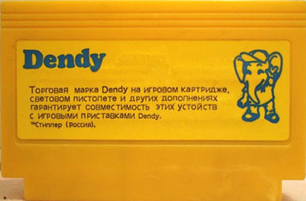Серия с телефоном компании (095)245-1996
Без марки Стиплер
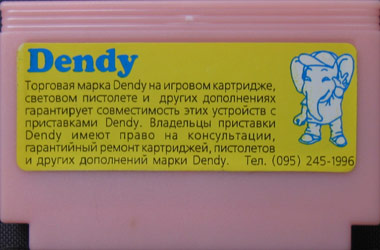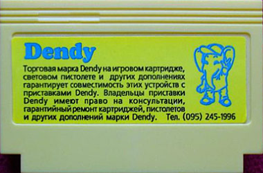 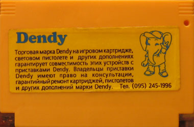С маркой Стиплер
 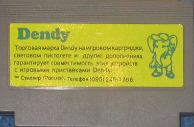
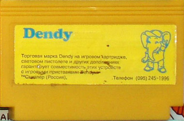
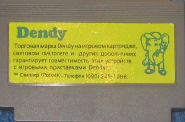
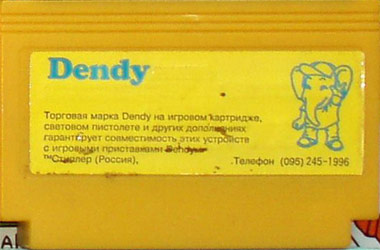
С маркой Стиплер и буквенным кодом (косоглазый слон)
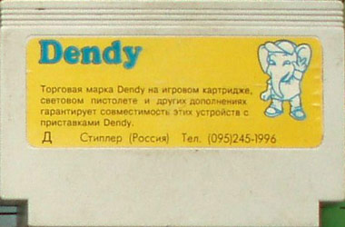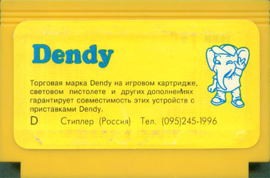 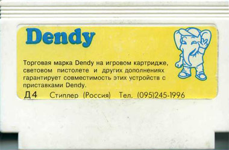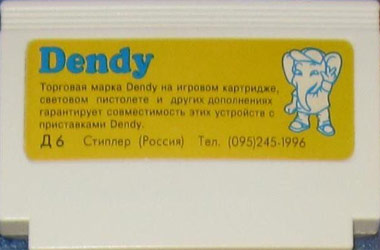 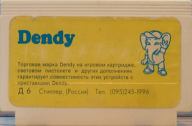С маркой Стиплер и цифровым кодом
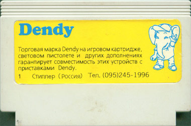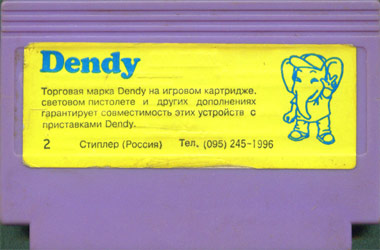 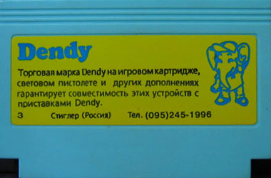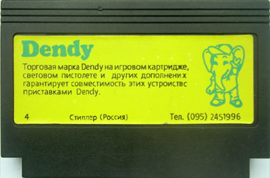 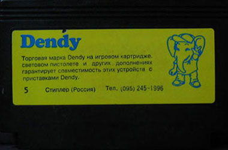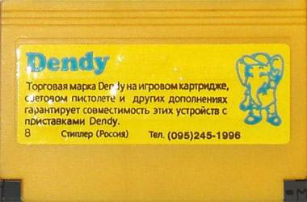 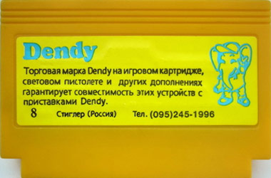Серия с телефоном компании (095)921-2618
Без марки Стиплер
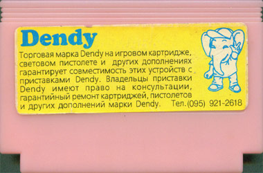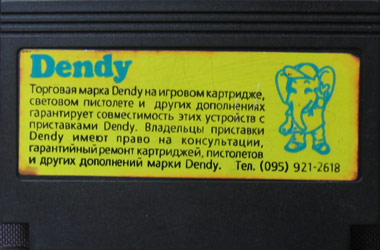 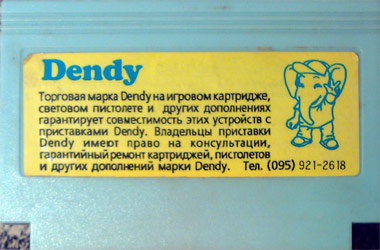С маркой Стиплер
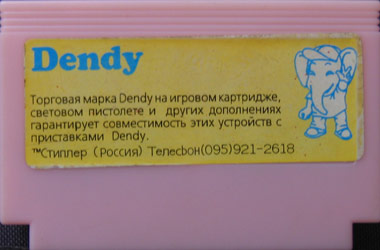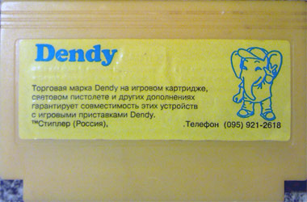 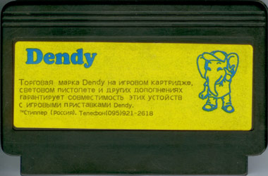
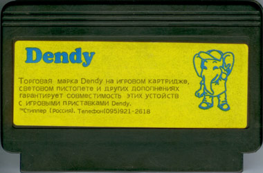
С марками Стиплер и Lamport
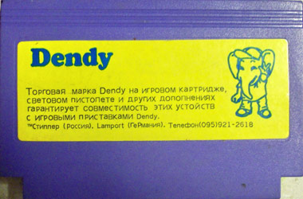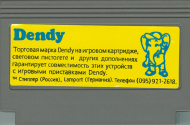 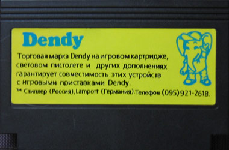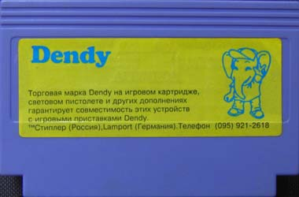Серия без слонов
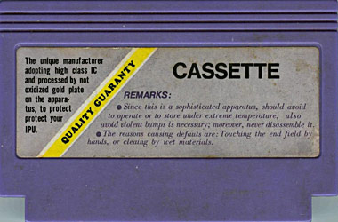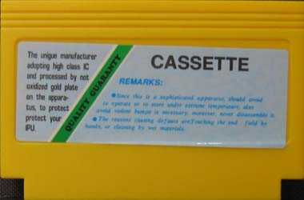 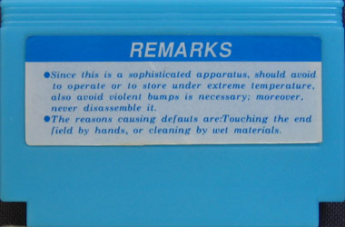
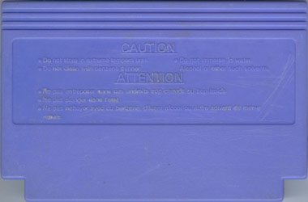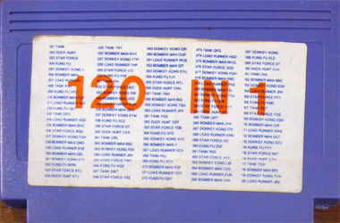
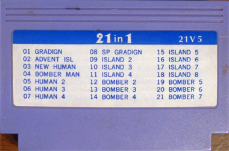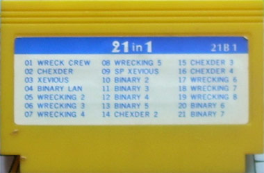
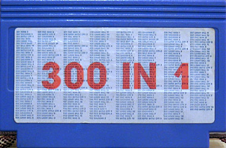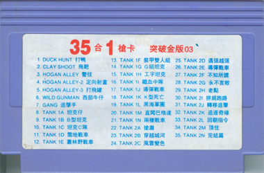
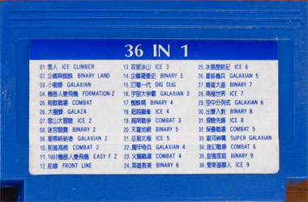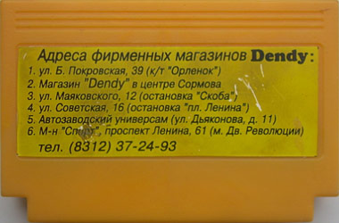
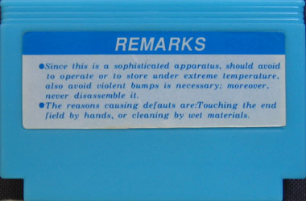
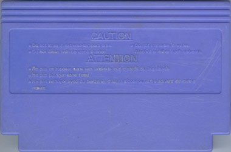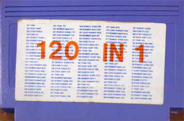
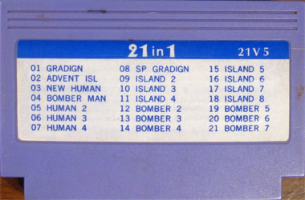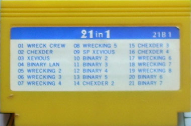
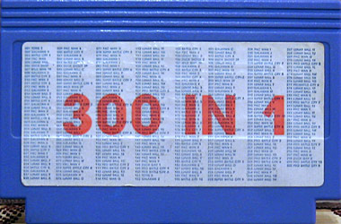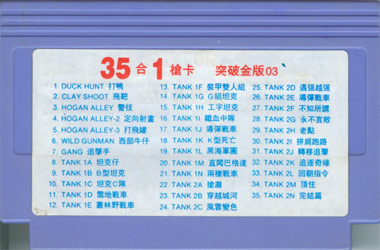
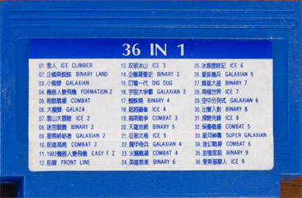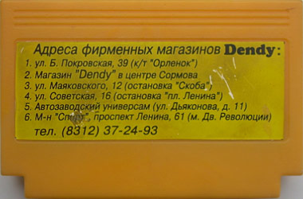